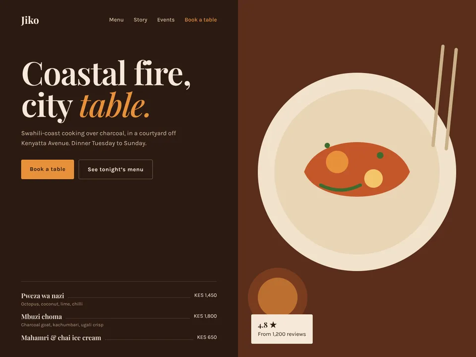

30 seconds · what people make · sound on
It starts with one sentence

One sentence. A real site.
Imagine it. Build it. Free.
Chat · Code · Design
Join the betaEvery design shown is an example page made for Wanlly. Music is original and synthesized, free to post anywhere. Also see the calm teaser.